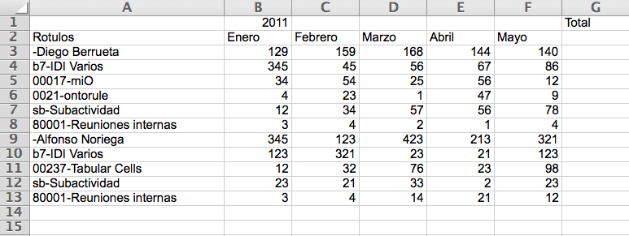
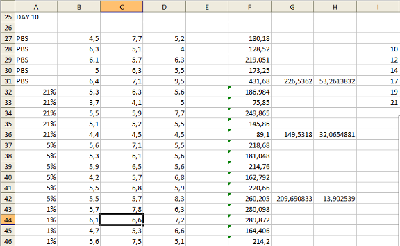

Documentacion Tabels - Reference Documentation
Authors:
Version: 0.6
Table of Contents
1 Introducción
Tabels transforma datos tabulares en grafos RDF. Este documento describe el funcionamiento y uso de Tabels.Las transformaciones se basan en dos procesos complementarios. En primer lugar, se evalúan patrones con respecto a las fuentes de datos tabulares. Como resultado de este primer proceso, las variables que aparecen en los patrones son ligadas a valores concretos. El segundo proceso consiste en la instanciación de plantillas para producir fragmentos del grafo RDF resultante.El resultado de una transformación es la combinación de todos los subgrafos RDF obtenidos mediante todas las posibles instanciaciones de las plantillas que sean coherentes con los patrones.Tabels define los patrones y las plantillas mediante un lenguaje propio, con una sintaxis inspirada por XQuery, XPath y SPARQL, pero con rasgos propios. El lenguaje es funcional, dado que se basa en la evaluación de expresiones y no existe asignación destructiva de valores a las variables (es decir, las variables nunca cambian de valor).Los patrones se definen mediante un lenguaje de sentencias interpretadas. Mediante este lenguaje resulta posible extraer valores de las fuentes de datos, calcular valores derivados mediante la evaluación de expresiones, y realizar encaje iterativo y condicional de patrones. Las sentencias tienen una estructura jerárquica, de tal forma que cada sentencia puede modificar la forma en la que se realiza el encaje de patrones en las sentencias anidadas. La interpretación de los patrones se realiza en preorden y comienza por la sentencia que ocupa la raíz de la jerarquía. Las variables que aparecen en los patrones (y por tanto, sus ligaduras) tienen un ámbito limitado a la sentencia en la que aparecen y sus sentencias anidadas.La interpretación de una sentencia puede producir ligaduras para variables que previamente no se encontraban aún asignadas. Este suceso se denomina evento. En un evento, una o más variables resultan ligadas a valores concretos. Una variable puede ligarse a varios valores (pero no de forma simultánea) en distintos eventos desencadenados por una sentencia, por ejemplo, en una iteración.Tabels realiza todas las instanciaciones posibles de las plantillas considerando todos los eventos disparados por los patrones. Una plantilla es instanciable con respecto a un evento si el evento contiene ligaduras para al menos todas las variables contenidas en la plantilla. Una plantilla se instancia para cada evento que contiene una combinacione distinta de ligaduras sus variables. Por tanto, no es necesario establecer una relación explícita entre los patrones y las plantillas, ya que se determina automáticamente. Como consecuencia, los patrones de un programa Tabels definen _cómo se extraen los valores de las variables a partir de las fuentes de datos_ y las plantillas definen _qué forma tienen los subgrafos que conforman el resultado_. Esta separación reduce el acoplamiento entre ambas partes al mínimo (sólo deben acordarse nombres de variables comunes), y permite que patrones y plantillas evolucionen y se reutilicen de forma independiente.Datos tabulares de entrada
Tabels puede leer distintos formatos de entrada, siempre que tengan una estructura tabular. Más concretamente, las entradas de Tabels consisten en estructuras matriciales de cuatro dimensiones: fichero, hoja, fila y columna. En cada posición de la matriz existe un valor concreto. Tabels admite como entrada estructuras más sencillas que carezcan de alguna de estas dimensiones, por ejemplo, ficheros CSV (no tienen "hojas").Las sentencias de los patrones permiten seleccionar subconjuntos de estas estructuras de datos, por ejemplo, una columna de una hoja y fichero concreto. También permiten realizar iteraciones por los valores dentro de una dimensión, por ejemplo, una iteración por filas.Grafos RDF de salida
Una transformación Tabels produce como resultado exactamente un grafo RDF. Este grafo se obtiene de la combinación de los subgrafos producidos por las instanciaciones de las plantillas.2 Lenguaje Tabels
El lenguaje tabels para la conversión de formatos de datos estructurados a RDF está formado por los siguientes elementos:- Directivas
- Definición de prefijos: simplificación de URI's mediante la definición de prefijos para las mismas. La URI debe ir contenida entre los caracteres "<>". Estos prefijos pueden ser reusados en la definición de los templates.
prefix prefijo : uri
- Descripción del origen de datos
- Sentencias de dimensiones: Este tipo de sentencias tabels permiten recorrer el origen de datos indicando las dimensiones por las que iterar, condiciones de inicio, parada y salto.
- Sentencias condicionales: Sentencias tabels que varían el flujo de ejecución normal de un programa tabels en función de una condición.
- Sentencias de asignación de variables: Su función es asignar valores del origen de datos a variables y modificarlos.
- Variables: comienzan con '?' seguidas de caractéres alfanuméricos.
?testResource
- Tuplas: conjunto ordenado de N Variables separado por comas y delimitado por los caracteres '[' y ']'
[?variable1, ?variable2]
- Posición: indica una posición en el origen de datos. Es posible definir las posiciónes de dos formas distintas:
- Posición absoluta: Indicando el lugar exacto en el origen de datos
B12
- Posición relativa a una variable: Relaciona la posición a la de una variable, ya sea tomando la misma o calculandola en función de unas indicaciones.
2 RIGHT OF ?rowId
- Expresiones: funciones que permiten modificar el valor de las variables.
- Templates: Reglas para la instanciación de las variables obtenidas en el recorrido del origen de datos. Sigue la sintaxis N3 sustituyendo sujeto y/o predicado de la tripleta por variables definidas en el código previo o por literales(cadenas de texto o números).
?resources a ex:SomeResource .
?resources ex:prueba ?prueba .
?resources ex:col2 ?col2construct
{
?resources a ex:SomeResource .
[] ex:prueba ?prueba .
[ex:col2 ?col2]
} construct
{
?resource rdf:type ex:Movie ;
ex:rank ?rankInt ;
ex:rating ?ratingFloat ;
rdfs:label ?titleTrimmed ;
ex:year ?year ;
ex:votes ?votesInt ;
owl:sameAs ?dbpediaResource
}2.1 Sentencias de dimensiones
Sentencias de iteración
Este tipo de sentencias tabels permiten iterar por una dimension del origen de datos. La sintaxis de la sentencia de iteración es:FOR [ ?variable IN] dimension [STARTS AT position |STARTS WHEN expression ] [FILTER expresion ] [UNTIL expression |WHILE expression ]
Sentencias de selección de dimensión
SET [ ?variable ] IN dimension value
2.2 Sentencias condicionales
Sentencias Condicionales
Este tipo de sentencias nacen para cubrir aquellas ocasiones en las que puede ser útil condicionar en tiempo de ejecución el recorrido por una parte del programa tabels en función de los valores encontrados en la tabla o de la posición actual. La sintaxis de de estas sentencias es de la forma:WHEN [ expression | position ] DO
.
.
.
MATCH [?dvl1,?rawItemValue] IN horizontal
WHEN can-be-double(?rawItemValue) DO
LET ?itemValue = double(?rawItemValue)
LET ?dv1 = resource(?dvl1,<http://example.org/ex#>) CONSTRUCT {
?item a scv:Item .
?item scv:dataset ex:myDataset .
?item rdf:value ?itemValue .
?item scv:dimension ?dv1
}
.
.
.2.3 Sentencias de asignación de variables
Sentencia de asignación de variables
match Tuple [at Position] [filter Expression]
Sentencia tratamiento de variables
let Variable = Expression
2.4 Expresiones
2.4.1 Expresiones Numéricas
Operadores aritméticos
- numeric-add
numeric-add(op1 : Double, op2 : Double) : Double
- int-add
int-add(op1 : Int, op2 : Int) : Int- numeric-substract
numeric-substract(op1 : Double, op2 : Double) : Double
- int-substract
int-substract(op1 : Int, op2 : Int) : Int- numeric-multiply
numeric-multiply(op1 : Double, op2 : Double) : Double
- int-multiply
int-multiply(op1 : Int, op2 : Int) : Int- numeric-divide
numeric-divide(op1 : Double, op2 : Double) : Double
- numeric-integer-divide
numeric-integer-divide(op1 : Double, op2 : Double) : Int
- numeric-mod
numeric-mod(op1 : Double, op2 : Double) : Double
Operadores de comparación
- numeric-equal
numeric-equal(op1 : Double, op2 : Double) : Boolean
- numeric-greater-than
numeric-greater-than(op1 : Double, op2 : Double) : Boolean
- numeric-less-than
numeric-less-than(op1 : Double, op2 : Double) : Boolean
Transformaciones
- abs
abs(operando : Double) : Double
- ceiling
ceiling(operando : Double) : Double
- floor
floor(operando : Double) : Double
- round
round(operando : Double) : Double
Conversiones de tipo
- int
int(operando : numeric) : Int int(operando : numeric, default :Int) : Int
- is-int
is-int(operando : any) : Boolean
can-be-int(operando : any) : Boolean
- float
float(operando : numeric) : Float
- double
double(operando : numeric) : Double double(operando : numeric, default :Double) : Double
- is-double
is-double(operando : any) : Boolean
can-be-double(operando : any) : Boolean
2.4.2 Expresiones con Cadenas
Funciones
- concat
concat(str1: String, str2: String , ...) : String
- string-join
string-join(str1: String; str2: String ; … , sep: String) : String
- substring
substring(string: String , index: Int) : String substring(string: String , index: Int, length: Int) : String
- string-length
string-length(string: String) : int
- normalize-space
normalize-space(string: String) : string- upper-case
upper-case(string: String) : string
- lower-case
lower-case(string: String) : string
- translate
translate(string: String, pattern: String, replacement: String) : string
Predicados
- contains
contains(container: String, content: String) : Boolean
- starts-with
starts-with(string: String, start: String) : Boolean
- end-with
ends-with(string: String, end: String) : Boolean
- substring-before
substring-before(container: String, sufix: String) : String
- substring-after
substring-after(container: String, prefix: String) : String
- matches
matches(literal: String, rExpression: Regex) : Boolean
- replace
replace(container: String, rExpression: Regex, replacement: String) : String
- compare
compare(string1: String, string2: String) : Int
- Si string1 < string2 devuelve -1
- Si string1 == string2 devuelve 0
- Si string1 > string2 devuelve 1
Funciones y predicados no en XPath 2.0
- levenshtein-distance
levenshtein-distance(string1: String, string2: String) : Int
- first-index-of
first-index-of(string1: String, string2: String) : Int
- last-index-of
last-index-of(string1: String, string2: String) : Int
- trim
trim(string: String) : String
2.4.3 Expresiones Variadas
- DBPedia-Disambiguation
DBPedia-Disambiguation(query: String, workMode: String) : String
- FIRST : Devuelve el primer resultado de la desambiguación contra la DBPedia.
- VERY-BREST : Devuelve el primer resultado de la desambiguación contra la DBPedia si la diferencia entre el primero y el sgundo es suficientemente grande.
- SINGLE : Devuelve el primer resultado de la desambiguación contra la DBPedia si es un resultado único.
- get-row
get-row(variable: Variable) : Int
- get-col
get-col(variable: Variable) : Int
Funciones RDF
- resource
resource(string: String, uri:String) : Resource
- literal
literal(string: String) : Resource- setLangTag
setLangTag(literal: String, lang: String) : Literal
Operadores lógicos
- not
not(boolean: Boolean) : Boolean
- and
and(expresion1: Expresion, expresion2: Expresion) : Boolean- or
or(expresion1: Expresion, expresion2: Expresion) : Boolean- if-then-else
if(condition:boolean) then result1: Resource else result2: Resource
2.5 Directivas
El lenguaje Tabels incorpora ''directivas'', que son sentencias especiales que modifican la generación de la salida. Las directivas son específicas del tipo de salida que se genera, y por tanto, pueden estar disponibles sólo en algunos casos.Mediante estas directivas resulta posible realizar integración de datos, mediación de vocabularios, inferencias y algunas comprobaciones.Un programa puede contener múltiples directivas, que además pueden aparecer en varias ocasiones. Las directivas se ejecutan en el orden en el que son declaradas.Directiva '@fetch'
Esta directiva indica a Tabels que, una vez finalizada la transformación, descargue las descripciones de todos los recursos que comiencen por el prefijo indicado. Por ejemplo:@FETCH("http://dbpedia.org/")http://dbpedia.org/resource/Asturias.Directiva '@jenarule'
Esta directiva permite ejecutar reglas Jena al terminar la transformación. Una única directiva puede contener múltiples reglas. La sintaxis de las reglas Jena se encuentra descrita en la documentación de Jena . Los prefijos declarados para el programa Tabels son automáticamente introducidos en las reglas, por lo que no es necesario declararlos de nuevo. Un ejemplo:@JENARULE("[R1: (?x foaf:knows ?z) -> (?z foaf:knows ?x)]")
PREFIX foaf: <http://xmlns.com/foaf/0.1/>foaf:knows en simétricas.Directiva '@sparql'
Esta directiva permite ejecutar sentencias SPARQL 1.1 Update como INSERT y DELETE para modificar el resultado. La sintaxis de estas sentencias se encuentra descrita en la especificación de SPARQL 1.1. Los prefijos declarados para el programa Tabels son automáticamente introducidos en las consultas, por lo que no es necesario declararlos de nuevo. Por ejemplo:@SPARQL("INSERT { ?x foaf:knows ?z } WHERE { ?z foaf:knows ?x }")
PREFIX foaf: <http://xmlns.com/foaf/0.1>Directiva '@load'
Esta directiva descarga un fichero RDF a partir de una URL, y lo incorpora al resultado. Recibe un parámetro: la URL del fichero a descargar. Actualmente sólo hay soporte para leer ficheros RDF/XML. Ejemplo:@LOAD("http://www.w3.org/People/Berners-Lee/card.rdf")3 Ejemplos de uso
- item 1
- subitem 1
- subitem 2
- item 2
3.1 Excel con "ventanas" de datos anidadas
El primero de los ejemplos muestra como leer "ventanas" de datos de una hoja excel cuando en una misma columna aparecen entidades diferentes que representan algún tipo de anidación.Ls siguiente excel de ejemplo contiene un parte de horas de empleados de una empresa. En la primera columna 'Rótulos' aparecen los empleados (marcados con '-'), las actividades (empiezan por una letra) y las subactividades (empiezan por un número). En la columnas a la derecha aparecen las horas respectivas de cada mes desde enero a mayo. El RDF generado se basará en "The Statistical Core Vocabulary" (scovo).El objetivo sería recorrer todas las horas registradas asociando cada una a su mes por un lado y su alumno, actividad o subactividad por otro.El primer paso es iterar sobre los nombres de los empleados. El siguiente snippet muestra como se recorren las filas seleccionando las celdas que empiezan por '-'. Además en cada iteración se crea/modifica una variable que representa la URI del empleado.FOR ?employee IN rows FILTER matches(?employee,"-[a-zA-Z0-9ñ]+ [a-zA-Z0-9]*")
LET ?resourceEmployee = resource(?employee,<http://localhost:8080/tabels-web/pubby/resource/>)
{
....
}construct
{
?resourceEmployee a ex:worker ;
skos:prefLabel ?employee .
ex:worker rdfs:subClassOf scv:Dimension ;
skos:prefLabel "Trabajador"}FOR ?horasEmployee IN cols starts at 1 RIGHT of ?employee until not matches(?horasEmployee, "[0-9]+") Set ?mesEmployee in rows "1" LET ?resourceMesEmployee = resource( ?mesEmployee, <http://localhost:8080/tabels-web/pubby/resource/>) ;
construct
{
?resourceMesEmployee a ex:month ;
skos:prefLabel ?mesEmployee .
ex:month rdfs:subClassOf scv:Dimension ;
skos:prefLabel "Mes"}{
construct
[ a scv:Item ;
scv:dataset ex:DedicacionEmpleadoMesDataSet ;
scv:dimension ?resourceEmployee ;
rdf:value ?horasEmployee;
scv:dimension ?resourceMesEmployee
]
}construct
{
ex:DedicacionEmpleadoMesDataSet a scv:Dataset ;
skos:prefLabel "Dedicacion Empleado-Mes" ;
scvxl:valuesMeasuredIn "Horas"
}FOR ?actividad IN rows FILTER matches(?actividad,"[a-z][a-z0-9]-[a-zA-Z0-9]+[a-zA-Z0-9 ]*")
LET ?resourceActividad = resource(?actividad,<http://localhost:8080/tabels-web/pubby/resource/>)
{
....
}PREFIX ex: <http://example.org/ex#> PREFIX scv: <http://purl.org/NET/scovo#> PREFIX rdf: <http://www.w3.org/1999/02/22-rdf-syntax-ns#> PREFIX rdfs: <http://www.w3.org/2000/01/rdf-schema#> PREFIX skos: <http://www.w3.org/2004/02/skos/core#> PREFIX scvxl: <http://idi.fundacionctic.org/scovoxl/scovoxl#> IN sheets "Hoja1" FOR ?employee IN rows FILTER matches(?employee,"-[a-zA-Z0-9ñ]+ [a-zA-Z0-9]*") LET ?resourceEmployee = resource(?employee,<http://localhost:8080/tabels-web/pubby/resource/>) { FOR ?horasEmployee IN cols starts at 1 RIGHT of ?employee until not matches(?horasEmployee, "[0-9]+") Set ?mesEmployee in rows "1" LET ?resourceMesEmployee = resource( ?mesEmployee, <http://localhost:8080/tabels-web/pubby/resource/>) ; FOR ?actividad IN rows FILTER matches(?actividad,"[a-z][a-z0-9]-[a-zA-Z0-9]+[a-zA-Z0-9 ]*") LET ?resourceActividad = resource(?actividad,<http://localhost:8080/tabels-web/pubby/resource/>) { FOR ?horasActividad IN cols starts at 1 RIGHT of ?actividad until not matches(?horasActividad, "[0-9]+") SET ?mesActividad in rows "1" LET ?resourceMesActividad = resource( ?mesActividad, <http://localhost:8080/tabels-web/pubby/resource/>) ; FOR ?subactividad IN rows FILTER matches(?subactividad,"[0-9]+-[a-zA-Z0-9]+[a-zA-Z0-9 ]*") LET ?resourceSubActividad = resource(?subactividad,<http://localhost:8080/tabels-web/pubby/resource/>) FOR ?horasSubActividad IN cols starts at 1 RIGHT of ?subactividad until not matches(?horasSubActividad, "[0-9]+") SET ?mesSubActividad in rows "1" LET ?resourceMesSubActividad = resource( ?mesSubActividad, <http://localhost:8080/tabels-web/pubby/resource/>) } } ////////////////////DEDICACIÓN EMPLEADO MES////////////////////////////////DIMENSION TRABAJADOR construct { ?resourceEmployee a ex:worker ; skos:prefLabel ?employee . ex:worker rdfs:subClassOf scv:Dimension ; skos:prefLabel "Trabajador"} //DIMENSION MES construct { ?resourceMesEmployee a ex:month ; skos:prefLabel ?mesEmployee . ex:month rdfs:subClassOf scv:Dimension ; skos:prefLabel "Mes"} //DATA SET construct { [ a scv:Item ; scv:dataset ex:DedicacionEmpleadoMesDataSet ; scv:dimension ?resourceEmployee ; rdf:value ?horasEmployee; scv:dimension ?resourceMesEmployee ] }construct { ex:DedicacionEmpleadoMesDataSet a scv:Dataset ; skos:prefLabel "Dedicacion Empleado-Mes" ; scvxl:valuesMeasuredIn "Horas"}/////////////////////DATA SET DEDICACIÓN EMPLEADO ACTIVIDAD MES////////////////////// construct { ?resourceActividad a ex:actividad ; skos:prefLabel ?actividad . ex:actividad rdfs:subClassOf scv:Dimension ; skos:prefLabel "Actividad"} construct { ?resourceMesActividad a ex:month ; skos:prefLabel ?mesActividad . ex:month rdfs:subClassOf scv:Dimension ; skos:prefLabel "Mes"} construct { [ a scv:Item ; scv:dataset ex:DedicacionEmpleadoActividadMesDataSet ; scv:dimension ?resourceEmployee ; scv:dimension ?resourceActividad ; rdf:value ?horasActividad; scv:dimension ?resourceMesActividad] } construct { ex:DedicacionEmpleadoActividadMesDataSet a scv:Dataset ; skos:prefLabel "Dedicacion Empleado-Actividad-Mes" ; scvxl:valuesMeasuredIn "Horas" } //////////////////DATA SET EMPLEADO SUBACTIVIDAD MES////////////////////// construct { ?resourceSubActividad a ex:subactividad ; skos:prefLabel ?subactividad . ex:subactividad rdfs:subClassOf scv:Dimension ; skos:prefLabel "SubActividad"} construct { ?resourceMesSubActividad a ex:month ; skos:prefLabel ?mesSubActividad . ex:month rdfs:subClassOf scv:Dimension ; skos:prefLabel "Mes"} construct { [ a scv:Item ; scv:dataset ex:DedicacionEmpleadoSubActividadMesDataSet ; scv:dimension ?resourceEmployee ; scv:dimension ?resourceSubActividad ; rdf:value ?horasSubActividad; scv:dimension ?resourceMesSubActividad] } construct { ex:DedicacionEmpleadoSubActividadMesDataSet a scv:Dataset ; skos:prefLabel "Dedicacion Empleado-SubActividad-Mes" ; scvxl:valuesMeasuredIn "Horas"}
3.2 Tabla HTML en página web
En este segundo ejemplo el origen de los datos tabulares no es un fichero excel sino una página web. Tabels es capaz de identificar la información de una tabla HTML en una página web y aplicarle los mapeos programados de la misma manera que si fuera una hoja excel.La página que se va a utilizar es la que contiene la tabla con las 250 peliculas 'top' de imdb (http://www.imdb.com/chart/top). La siguiente imagen muestra esa tabla: Primero mostramos el código completo de este ejemplo y a continuación destacaremos las partes más interesantes:
Primero mostramos el código completo de este ejemplo y a continuación destacaremos las partes más interesantes:PREFIX ex: <http://localhost:8080/tabels-web/pubby/resource/> PREFIX rdf: <http://www.w3.org/1999/02/22-rdf-syntax-ns#> PREFIX rdfs: <http://www.w3.org/2000/01/rdf-schema#>SET files "/private/var/folders/zz/zyxvpxvq6csfxvn_n0000000000000/T/tabels/projects/p1/upload/download-1340095324674.html" SET sheets "0" FOR ?rowId IN rows FILTER get-row(?rowId) MATCH [?rank,?rating,?title,?votes] IN horizontal LET ?titleTrimmed = trim(substring-before(?title,"(")) LET ?year = int(substring(?title,int-add(last-index-of(?title,"("),1),4)) LET ?rankInt = int(substring-before(?rank,".")) LET ?votesInt = int(translate(?votes,",","")) CONSTRUCT { [ rdf:type ex:Movie; ex:rank ?rankInt ; ex:rating ?rating ; rdfs:label ?titleTrimmed ; ex:year ?year ; ex:votes ?votesInt ] }
FOR ?rowId IN rows FILTER get-row(?rowId)
MATCH [?rank,?rating,?title,?votes] IN horizontalFOR ?rowId IN rows FILTER get-row(?rowId) LET ?rank = ?rowId MATCH [?rating,?title,?votes] IN horizontal AT 1 right of ?rowId
LET ?rankInt = int(substring-before(?rank,"."))
LET ?titleTrimmed = trim(substring-before(?title,"(")) LET ?year = int(substring(?title,int-add(last-index-of(?title,"("),1),4))
CONSTRUCT
{
[ rdf:type ex:Movie;
ex:rank ?rankInt ;
ex:rating ?rating ;
rdfs:label ?titleTrimmed ;
ex:year ?year ;
ex:votes ?votesInt ]
}PREFIX rdfs: <http://www.w3.org/2000/01/rdf-schema#>
PREFIX ex: <http://localhost:8080/tabels-web/pubby/resource/>SELECT *
FROM <http://localhost:8080/tabels-web>
WHERE { ?s rdfs:label ?titulo ;
ex:year ?anio ;
ex:rating ?clasificacion;
ex:rank ?puesto}
ORDER BY DESC (?anio)3.3 Selecciones y filtros de información avanzados
En este tercer ejemplo volvemos a trabajar con un fichero excel fijándonos en alguna nueva funcionalidad que ofrece Tabels. La excel en este caso contiene resultados de experimentos y se trata de una excel muy densa, con muchos datos. Lo que se va a mostrar es como Tabels nos permite ser muy concretos identificando mediante un programa secciones específicas de datos para contruir un programa de transformación.La imagen a continuación es una captura de una porción de la hoja 'Hoja2' de la excel que muestra parcialmente los grupos de datos que queremos capturar.Los resultados de los experimentos que nos interesan se encuentran en esta hoja 'Hoja2', entre las columnas 'A' y 'H', y empiezan en bloques por días a partir de la fila nº 25. Para los resultados de cada día se abre un bloque de filas: para el día 10 por ejemplo desde la fila 27 hasta la 47, representan los resultados para un animal concreto. En cada fila la columna 'A' contiene el valor del tratamiento que se ha dado al animal. Entre las columnas 'B' y 'I' se encuentran los números de los resultados obtenidos.Para empezar a iterar sobre esos datos lo único que hay que especificar en el programa Tabels es primero la hoja en la que se encuentran, con la construcción 'SET sheets'. A continuación, creamos una iteración por filas para cada día de experimentos, pero al 'FOR' por filas le especificamos que empiece en la primera celda con la expresión 'STARTS AT A25'. Además, como ya hemos visto en ejemplos anteriores, creamos una 'ventana' para el día de experimentos mediante un filtro por expresión regular:SET sheets "Hoja2" FOR ?experimentDay IN rows STARTS AT A25 FILTER matches(?experimentDay, "DAY [0-9]+") LET ?resourceExperimentDay = resource(?experimentDay, <http://example.com#>)
FOR ?treatment IN rows starts at 2 bottom of ?experimentDay filter matches(?treatment,"[a-zA-Z0-9.]+") LET ?resourceTreatment = resource(concat("F1+",?treatment), <http://example.com#>) LET ?mouse = int-substract(get-row( ?treatment),get-row(?experimentDay)) LET ?resourceMouse = resource(?mouse,<http://example.com#>) { .......... }
MATCH [?averageVolume,?deviation] IN horizontal AT 6 right of ?treatment FILTER matches(?averageVolume,"[0-9,.]+") ; MATCH [?height,?width,?depth,?death,?volume] IN horizontal AT 1 right of ?treatment FILTER matches(?volume,"[0-9,.]+")
construct
{
[ a scv:Item ;
scv:dataset ex:AverageTumorVolume ;
scv:dimension ?resourceExperimentDay ;
rdf:value ?averageVolume;
scv:dimension ?resourceTreatment;
ex:standardDeviation ?deviation]
}@fetch ("dbpedia") PREFIX ex: <http://example.org/ex#> PREFIX scv: <http://purl.org/NET/scovo#> PREFIX rdf: <http://www.w3.org/1999/02/22-rdf-syntax-ns#> PREFIX rdfs: <http://www.w3.org/2000/01/rdf-schema#> PREFIX skos: <http://www.w3.org/2004/02/skos/core#> PREFIX scvxl: <http://idi.fundacionctic.org/scovoxl/scovoxl#>set sheets "Hoja2" FOR ?experimentDay IN rows STARTS AT A25 FILTER matches(?experimentDay, "DAY [0-9]+") LET ?resourceExperimentDay = resource(?experimentDay, <http://example.com#>) FOR ?treatment IN rows starts at 2 bottom of ?experimentDay filter matches(?treatment,"[a-zA-Z0-9.]+") LET ?resourceTreatment = resource(concat("F1+",?treatment), <http://example.com#>) LET ?mouse = int-substract(get-row( ?treatment),get-row(?experimentDay)) LET ?resourceMouse = resource(?mouse,<http://example.com#>) { MATCH [?averageVolume,?deviation] IN horizontal AT 6 right of ?treatment FILTER matches(?averageVolume,"[0-9,.]+") ; MATCH [?height,?width,?depth,?death,?volume] IN horizontal AT 1 right of ?treatment FILTER matches(?volume,"[0-9,.]+") } //SCOVO TEMPLATE DATASET Mouse-Day-Treatment //DIMENSION EXPERIMENT DAY construct { ?resourceExperimentDay a ex:ExperimentDay ; skos:prefLabel ?experimentDay . ex:ExperimentDay rdfs:subClassOf scv:Dimension ; skos:prefLabel "Experiment Day"}//DIMENSION TREATMENTconstruct { ?resourceTreatment a ex:Treatment ; skos:prefLabel ?treatment . ex:Treatment rdfs:subClassOf scv:Dimension ; skos:prefLabel "Treatment"} //DIMENSION MOUSE construct { ?resourceMouse a ex:Mouse ; skos:prefLabel ?mouse . ex:Mouse rdfs:subClassOf scv:Dimension ; skos:prefLabel "Mouse"} //DATA SEt & ITEM construct { [ a scv:Item ; scv:dataset ex:IndividualTumorVolume ; scv:dimension ?resourceMouse ; scv:dimension ?resourceExperimentDay ; rdf:value ?volume; scv:dimension ?resourceTreatment; ex:height ?height; ex:width ?width; ex:depth ?depth] } construct { ex:IndividualTumorVolume a scv:Dataset ; skos:prefLabel "Individual Tumor Volume" ; scvxl:valuesMeasuredIn "Unidad volumen"}//SCOVO TEMPLATE DATASET Day-Treatment //DATA SEt & ITEM construct { [ a scv:Item ; scv:dataset ex:AverageTumorVolume ; scv:dimension ?resourceExperimentDay ; rdf:value ?averageVolume; scv:dimension ?resourceTreatment; ex:standardDeviation ?deviation] } construct { ex:AverageTumorVolume a scv:Dataset ; skos:prefLabel "Average Tumor Volume" ; scvxl:valuesMeasuredIn "Unidad volumen"}
4 API REST
Tabels ofrece un API de servicios web REST que permite hacer transformaciones y gestionar proyectos. A continuación se encuentran las especificaciones de los servicios REST ofrecidos por Tabels.Se asume que existe una instancia de Tabels desplegada en la URL{tabelsURL}, por ejemplo, en http://example.org/tabels.
4.1 Gestión de proyectos
Listado de proyectos
URL:{tabelsURL}Método: GETParámetros de consulta:
format=json(obligatorio, o en su defecto, se puede emplear negociación de contenidos HTTP).
200 OK
["proyecto-uno", "proyecto-dos"].Creación de un proyecto
URL:{tabelsURL}/createProjectMétodo: POST
Por el momento no se permite la creación de proyectos mediante el método PUT. Es posible que
en el futuro se añada esta posibilidad.
Parámetros de consulta:
newProjectId(obligatorio): cadena de texto con el nombre del nuevo proyecto
200 OKsi la creación tuvo éxito.
Por el momento no se dispone de un código de respuesta para indicar un fallo en la creación del proyecto, por ejemplo, debido a un nombre de proyecto inválido o repetido.
Borrado de un proyecto
URL:{tabelsURL}/project/{nombreProyecto}/deleteMétodo: POST
Por el momento no se permite el borrado de proyectos mediante el método DELETE. Es posible
que en el futuro se añada esta posibilidad.
Parámetros de consulta:
proyectId(obligatorio): cadena de texto con nombre del proyecto que se desea borrar.confirm=1(obligatorio): parámetro de confirmación. La acción sólo se ejecuta si el parámetro
200 OKsi el borrado tuvo éxito.404 Not foundsi el proyecto no existía previamente.
4.2 Gestión de ficheros de entrada
Listado de ficheros de entrada
URL:{tabelsURL}/project/{nombreProyecto}/input/Método: GETParámetros de consulta:
format=json
200 OKen caso normal.404 Not Foundsi el proyecto no existe.
["fichero1.xls", "fichero2.csv"].
Subida de un fichero de entrada
URL:{tabelsURL}/project/{nombreProyecto}/input/Método: POST{info}
Por el momento no se permite la subida de ficheros mediante el método PUT. Es posible que
en el futuro se añada esta posibilidad.
{info}
Parámetros de consulta:
file(obligatorio): un fichero adjunto a la petición en formato multipart/mime.
200 OKen caso normal.404 Not Foundsi el proyecto no existe.
Borrado de un fichero de entrada
URL:{tabelsURL}/project/{nombreProyecto}/input/{nombreFichero}Método: DELETEParámetros de consulta: ningunoCódigo de respuesta:
200 OKsi el borrado tuvo éxito.404 Not Foundsi el proyecto o el fichero no existen.
4.3 Gestión de programas de transformación
Descarga del programa de transformación
URL:{tabelsURL}/project/{nombreProyecto}/programMétodo: GETParámetros de consulta: ninguno.Código de respuesta:
200 OKen caso de éxito.404 Not Foundsi el proyecto no existe.
Subida de un programa de transformación
URL:{tabelsURL}/project/{nombreProyecto}/saveProgramMétodo: POST
Por el momento no se permite la subida de programas mediante el método PUT. Es posible que
en el futuro se añada esta posibilidad.
Parámetros de consulta:
program(obligatorio): una cadena de texto con el contenido del nuevo programa.
200 OKsi el programa quedó almacenado con éxito.404 Not Foundsi el proyecto no existe.400 Bad requestsi el programa no es válido.
Por el momento, el servicio REST no proporciona más información sobre las causas del rechazo de un programa. Es posible que en el futuro se añadan detalles tales como la localización y mensaje asociados a los errores sintácticos.
4.4 Acceso a datos y consultas
Descarga de datos
El resultado de las transformaciones son datos RDF, y se pueden descargar en la URL:{tabelsURL}/project/{nombreProyecto}/dataformat se puede
elegir la representación de los datos. Están disponibles las siguientes:
- RDF/XML: tipo MIME
application/rdf+xml, o bien el parámetroformat=rdfxml. - NTriples: tipo MIME
text/plain, o bien el parámetroformat=text. - Turtle: tipo MIME
text/turtle, o bien el parámetroformat=ttl.
Datos enlazados
Los recursos generados por Tabels pueden ser accedidos mediante un interfaz de datos enlazados que proporciona representaciones HTML y RDF de los mismos. A tal fin, es necesario que los recursos estén definidos en el espacio de nombres{tabelsURL}/pubby/resource/{nombreProyecto}/GET /tabels/pubby/resource/mi-proyecto/mi-recurso Accept: application/rdf+xml
/tabels/pubby/data/mi-proyecto/mi-recurso), mientras queGET /tabels/pubby/resource/mi-proyecto/mi-recurso Accept: application/xhtml
/tabels/pubby/page/mi-proyecto/mi-recurso).Punto de consulta SPARQL
Tabels proporciona puntos de consulta SPARQL específicos para cada proyecto, y un punto de consulta SPARQL global que agrupa todos los proyectos (cada proyecto está en un grafo distinto al que se puede acceder medianteFROM o FROM NAMED):
- Punto de consulta por proyecto:
{tabelsURL}/project/{nombreProyecto}/sparql - Punto de consulta global:
{tabelsURL}/sparql